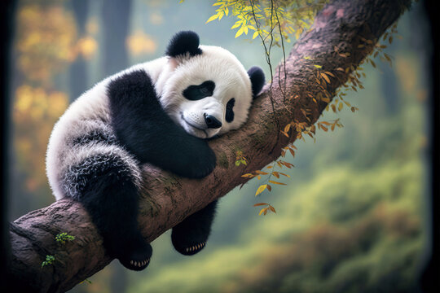

Pandas (often referred to as simply “pandas”) are black and white bears. In the wild, they are found in thick bamboo forests, high up in the mountains of central China These magnificent mammals are omnivores.  But whilst pandas will occasionally eat small animals and fish, bamboo counts for 99 percent of their diet.Pandas eat fast, they eat a lot, and they spend about 12 hours a day doing it. The reason: They digest only about a fifth of what they eat. Overall, bamboo is not very nutritious. To stay healthy, they have to eat a lot—up to 15 percent of their body weight in 12 hours—so they eat fast.Pandas' molars are very broad and flat. The shape of the teeth helps the animals crush the bamboo shoots, leaves, and stems that they eat. They can chomp on bamboo up to one-and-a-half inches thick.To get the bamboo to their mouths, they hold the stems with their front paws, which have enlarged wrist bones that act as thumbs for gripping. A panda should have at least two bamboo species where it lives, or it will starve.A scarcity in bamboo threatens the already limited panda population. They can chomp on bamboo up to one-and-a-half inches thick.To get the bamboo to their mouths, they hold the stems with their front paws, which have enlarged wrist bones that act as thumbs for gripping. A panda should have at least two bamboo species where it lives, or it will starve.A scarcity in bamboo threatens the already limited panda population. They can chomp on bamboo up to one-and-a-half inches thick.To get the bamboo to their mouths, they hold the stems with their front paws, which have enlarged wrist bones that act as thumbs for gripping. A panda should have at least two bamboo species where it lives, or it will starve.A scarcity in bamboo threatens the already limited panda population.